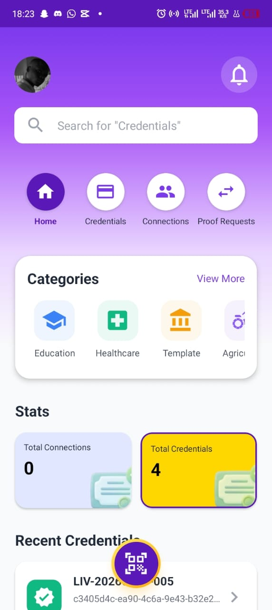

Certifiez chaque
livraison de coton.
Bâtissez la crédibilité
financière.
CottonPay transforme le bordereau papier en preuve numérique infalsifiable, grâce à l'identité nationale (ANIP) et la blockchain. Les producteurs existent enfin dans le système financier formel.
Trois piliers, un système de confiance
De l'identité nationale au crédit bancaire, CottonPay connecte chaque maillon de la chaîne cotonnière.
Identité vérifiée
Chaque acteur — producteur, représentant CVPC, usine — est authentifié via l'ANIP grâce à eSignet. Une identité nationale, un NPI, une personne réelle.
Livraisons certifiées
Chaque livraison génère un credential numérique signé sur blockchain Hyperledger Indy. Infalsifiable, horodaté, stocké dans le wallet du producteur via un QR code.
Crédit accessible
L'historique vérifiable des livraisons ouvre l'accès au crédit formel à des taux bancaires. Fini l'endettement informel à 200% d'intérêt annuel.
Gérez vos producteurs et certifiez leurs livraisons
Enregistrez les livraisons au point de collecte, émettez des credentials numériques vérifiables et gérez vos producteurs. Tout est tracé, horodaté et signé sur la blockchain.
- Gestion des producteurs affiliés à votre CVPC
- Enregistrement des livraisons par lot avec classement qualité (1er / 2ème choix)
- Credential numérique (QR code) + bordereau PDF téléchargeable
- Fiche producteur avec historique complet et régénération de credentials
| Producteur | Poids | Qualité | Credential |
|---|---|---|---|
| A. MENSAH | 500 kg | 1er choix | ✓ Émis |
| K. DOSSOU | 300 kg | 2ème choix | ✓ Émis |
| B. ALABI | 420 kg | 1er choix | En attente |

Vos preuves de livraison dans votre poche
Téléchargez e-IDapp pour recevoir et stocker vos preuves de livraison certifiées. Chaque credential est infalsifiable et accessible même hors-ligne.
- Scannez le QR code après chaque livraison
- Stockage hors-ligne et souverain sur votre téléphone
- Présentez votre historique certifié à une banque en un scan
Accédez à l'historique certifié d'un producteur
Un NPI et l'authentification du producteur via eSignet (OTP national), et vous avez la preuve vérifiable de ses livraisons passées. Idéal pour les banques et institutions financières.
Le producteur devra s'authentifier via eSignet (OTP sur son téléphone).